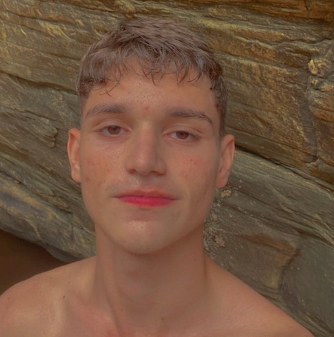

// FUNÇÃO
DUELISTA
// BIOGRAFIA
Criada no coração do México, Reyna domina o combate individual, destacando-se a cada abate efetuado. Sua capacidade só é limitada por sua própria perícia, tornando-a bastante dependente de desempenho.
m i n h a o p i n i ã o
// FUNÇÃO
// BIOGRAFIA
Criada no coração do México, Reyna domina o combate individual, destacando-se a cada abate efetuado. Sua capacidade só é limitada por sua própria perícia, tornando-a bastante dependente de desempenho.
Inimigos abatidos por Reyna deixam Orbes de Alma que duram 3s. INSTANTANEAMENTE consome um Orbe de Alma próximo, curando-se de forma rápida por um curto período. A quantidade de Vida concedida por esta habilidade que ultrapassar 100 decairá ao longo do tempo. Se a habilidade IMPERATRIZ estiver ativa, esta habilidade será conjurada automaticamente e não consumirá o orbe.
INSTANTANEAMENTE consome um Orbe de Alma próximo, ficando inatingível por um curto período. Também se torna invisível se a habilidade IMPERATRIZ estiver ativa.
EQUIPE um olho etéreo e destrutível. ATIVE para lançá-lo adiante a uma curta distância. O olho deixará com visão turva todos os inimigos que olharem para ele.
INSTANTANEAMENTE entra em estado de frenesi, aumentando de forma drástica as velocidades de disparo, equipamento e recarga de munição. Renova a duração ao fazer um abate.

Coloquei essa lenda aqui por que antes de se tornar main Jett ele era Main Reyna, ele ainda ta afiado quando pega seu antigo main, é surreal, parece até hack
Outra fera que é main Reyna é mano Douglas, nem sempre entra bomb mas quando entra é F pra quem ta defendendo, infelizmente não tenho clip dessa fera jogando mas vocês podem ver ele ao vivo na Twitch🔗, joga dimaizee. Maior main Reyna que conheço, o cara tem o inventário com todas as skins roxa mano, ele é fiel ao personagem.
Instagram da fera: @dougssszz